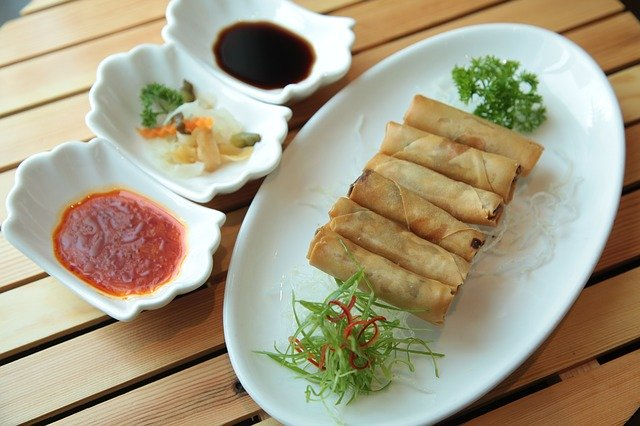
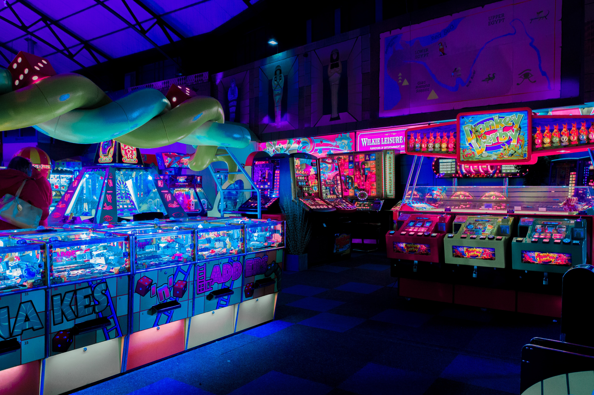
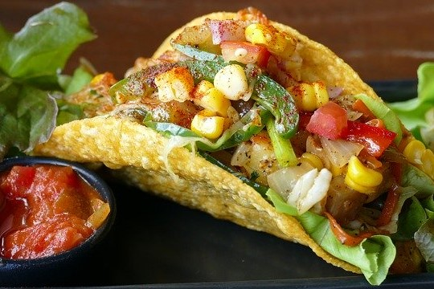
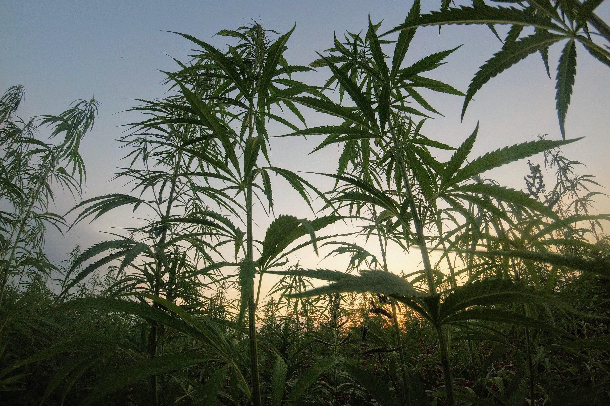
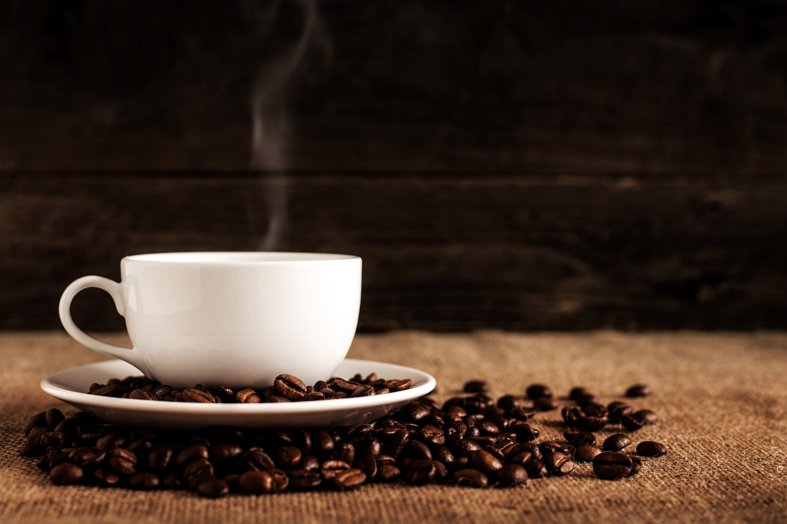
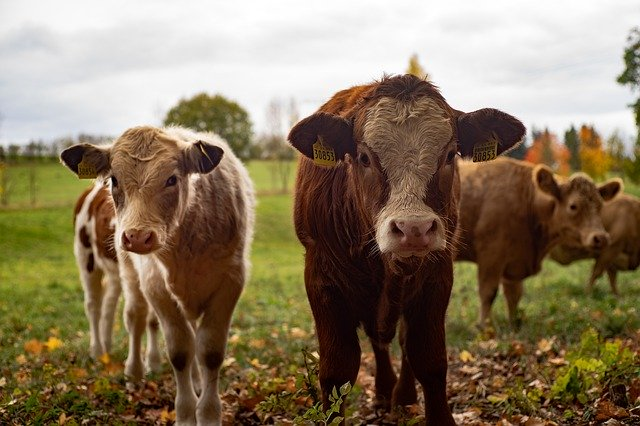

South Park is a quaint little mountain town located in the heart of Colorado. Just an hour drive from Denver, South Park offers amazing dinning experiences, outdoor activities, and great small business
CtPaTown is South Park's newest district and is home to great businesses like City Wok and Whole Foods! That's right Whole Foods! If you are looking for trendy nightlight, check out SoDoSoPa.
South Park is home to The South Park Cows. Go Cows!
City Wok
City Wok is a traditional Chinese restaurant located in CtPaTown. Owner Tuong Lu Kim invites you to try is City Pork and City Egg Rolls
Whistlin' Willy's
Whistlin' Willy's is a Pizzeria and Arcade. Fun for the whole family! Purchase family meal and get a large pie, pitcher of soda, and $10 in game credits
Freeman's Tacos
Freeman's Tacos is a fastfood mexican restaurant owned by Morgan Freeman. try the all new Seven Layer Quessarito Chipotle Beefy Nacho Supreme
Tegridy Farms
Tegridy Farms is located just outside of South Park town limits. There owner Randy Marsh grow the best marijuana in the state because it is grown with Tegridy
Photo Dojo
Photo Dojo is a photo studio and lab. Bring your family in for a portrait session or get your photos printed here
Tweek Bros. Coffeehouse
Tweek Bros. Coffeehouse is run by Richard Tweak and his family. Get a cup of homebrew coffee made with the finest beans. A simple cup of coffee from a simpler time.
South Park Cow Days
This September 10th- 13th is South Park Cow Days! Enjoy food, rides and games. If you are feeling adventures try running with the cows.
Holiday Fest
December 22nd & 23rd. Come to the town square for coco. Kids can meet Santa and have picture taken with him
Hippie Jam Fest

April 4th. Come to South Park to see all of your Favorite Bands, inCluding Fish and The Appreciative Dead